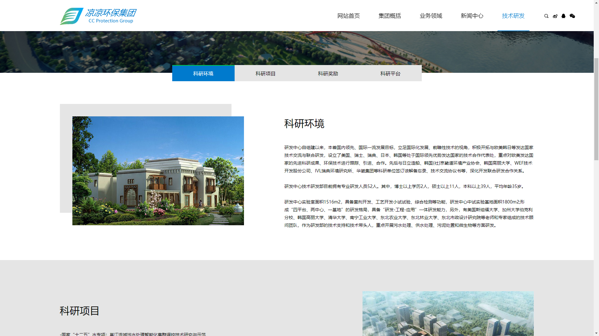
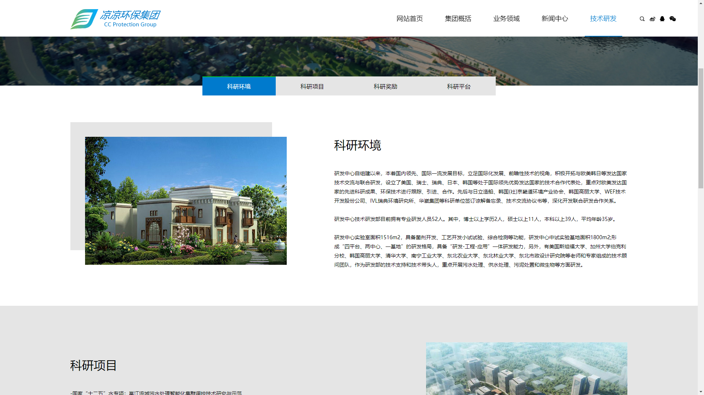

↓ 点击往下看看 ↓
根据某个网站的UI，设计出UI类似内容不同的网页；
使用HTML，CSS，jQuery代码写出已设计UI的网站；
根据某个美食网站内容，自己单独设计出新的UI；
在网上找某个美食网站，进行内容提取，为美食网站进行翻新，或者自定义修改；
使用getJSON方法调取本地JSON文件获取数据展示到页面上；
随机输出一句话的假人工客服（需要登录）；
专业内4人组队参加省级第13届广西大学生计算机应用大赛（网页大赛）；
负责一部分网页的HTML，CSS，jQuery代码编写；
利用网络寻找jQuery、JavaScript特效模板进行更改，用到制作网站上；
荣获第13届广西大学生计算机应用大赛（网页大赛）一等奖；
 
